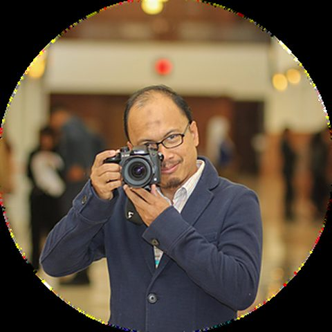
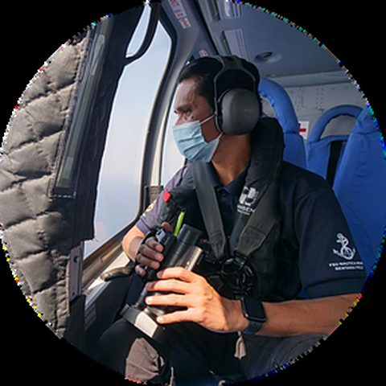
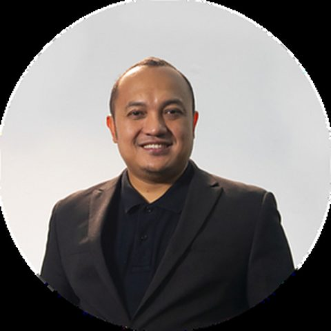
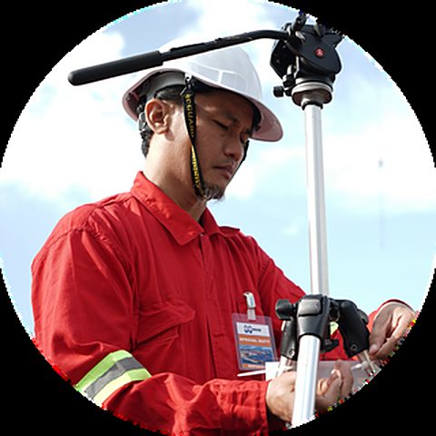
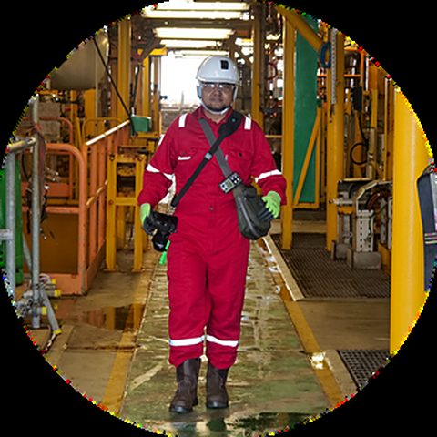
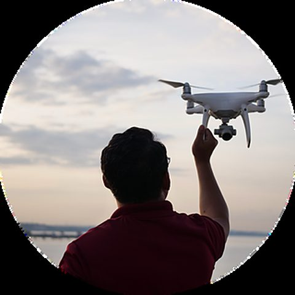

About The Studio
Kajang-based. Deck-tested.
As we approach our 10-year milestone in 2025, Aliff Creative remains a working studio built around one idea: go where the story is, even when that's 100 metres below the ocean surface.
Company Overview
A partnership built for the job
Aliff Creative is a collaboration of creative professionals through a network of partnership and affiliations between Aliff Creative Design, Multimedia Art and Creativetank Sdn Bhd, offering integrated creative digital media production for general, industrial and oil & gas clients.
Our focus spans total project management and execution, technical guidance and operations, sourcing of skilled staff — internal or outsourced — content development, and training.
Established on 28 January 2016, Aliff Creative is headquartered at a versatile office studio under the brand Begin'da Media Studio, in Taman Universiti, Kajang, Selangor. Through targeted restructuring and a strategic partnership with Begin'da Media Services, we've evolved from a niche focus in industrial and oil & gas into a full-spectrum creative media solutions provider — serving a broader market while keeping the technical depth that built our name.
Oil & Gas Track Record
A trusted name offshore
Since delivering our first videography project in 2017, Aliff Creative has built a proven track record in the oil & gas industry, producing high-impact visual content for some of the sector's most prominent names — including Sapura Energy and McDermott. In 2024 alone we secured and delivered three major projects: South Furious‑30 (SF30) Water Flood Phase 2, KMSE Field Development, and FaS Pipelay and Heavy Lift for MLNG FaS (F27, F22 and Selasih) Gas Field Development.
We've also built a proven record in 3D animation — from the 2019–2022 EPCIC SHWE Project Phase 2 Development to the 2023 Pegaga Subsea Flange Seepage Rectification Services — translating complex, often inaccessible operations into clear visual narratives for engineering review and client reporting.
By The Numbers
Oil & Gas Project
The Core Team
Seven people who show up on the deck, in the control room, and behind the ROV feed — every campaign.

Ahmad Aidil
Project Team Lead / Director

Nasrul Effendy
Operations Lead / Drone Specialist

Muhamad Zulkarnain
Director VFX & 3D Animation / Producer

Abdul Rahman
Project Controller / Photographer

Safwan Asyad
Photo-videographer / Drone Operator
Muhammad Asyraf
Photo-videographer / Drone Operator

Lokman Nahari
Photo-videographer / Drone Operator
2024–2025 Highlights
Beyond the rig
2024 was a defining chapter, in partnership with Begin'da Media Services: full media production — printing, technical setup and live coverage — for the Pelan Dasar dan Tindakan Wanita Selangor 2024–2026 launch; an event montage for Kempen Bersatu Menentang Keganasan Terhadap Wanita Dan Kanak-kanak; the AWFA School profile video, built without any pre-existing footage; and live-streaming for major corporate and community events.